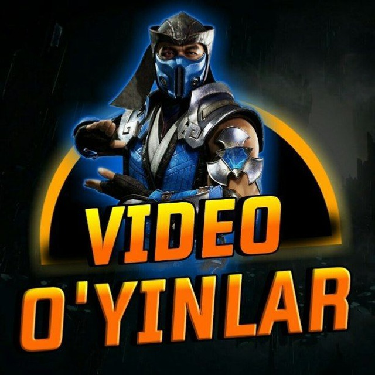

Ghostwire: Tokyo haqidagi ma'lumotni o'qishdan avval kanalimga obuna bo'lishinglarni so'rab qolar edim. Chunki bu kanalda sizga yangidan-yangi ma'lumotlar va qiziqarli faktlar gapirib beriladi. Va albatta tez orada chiqishi kutilayotgan yangi o'yinlar haqida ham ma'lumotlar talaygina.

.jpg)
.jpg)
.jpg)
.jpg)
Ghostwire: Tokyo - bu birinchi shaxs uchun moʻljallangan jangovar va sarguzashtli dahshatli oʻyin. O'yinchi Tokio bo'ylab arvohlar va ruhlarni mag'lub qilish uchun turli xil paranormal qobiliyatlardan foydalanishi mumkin. Jang rejissyori Shinichiro Xara janglarni “karate sehr bilan uchrashadi” deb taʼriflagan, chunki oʻyinchi qahramon afsun qilish uchun kujikiri qoʻl imo-ishoralaridan ilhomlangan qoʻl harakatlaridan foydalanadi. Dushman sog'lig'ining ko'p qismini yo'qotsa, uning yadrosi ochiladi va o'yinchi uni yo'q qilish uchun harakatlardan foydalanib, ruhni o'ldiradi.O'yin zamonaviy Tokioda bo'lib o'tadi, u erda odamlar hamma joyda g'oyib bo'lishni boshlaydilar. O'yinchi g'oyib bo'lish sababini aniqlashi kerak va hikoya chizig'ini yakunlash uchun barcha turdagi qurollar va g'ayritabiiy qobiliyatlarning katta arsenali taqdim etiladi.
Tokioning deyarli barcha aholisi sirli ravishda g'oyib bo'ldi va boshqa dunyo ruhlari (Ziyoratchilar deb nomlanuvchi) shaharga bostirib kirishdi. Shu bilan birga, qahramonning g'ayritabiiy kuchlari namoyon bo'la boshlaydi. O'yinchi shaharni ta'qib qilayotgan ruhlarga qarshi kurashayotganda, ular Yaponiya poytaxtida sodir bo'layotgan g'alati voqealar ortidagi sirni ochishi mumkin bo'lgan Xannya niqoblari guruhiga duch kelishadi.
2019-yil iyun oyida E3 2019 ko‘rgazmasida Bethesda Softworks matbuot anjumani chog‘ida Shinji Mikami va kreativ direktor Ikumi Nakamura qo‘rqinchli elementlarga ega jangovar sarguzasht o‘yinini Ghostwire: Tokyo e’lon qilishdi. Keyinchalik Nakamura 2019-yil sentabrida Tango Gameworks-dan nafaqaga chiqdi va studiyani u erda to'qqiz yil davomida qoldirdi. The Evil Within video o‘yinlari seriyasidan farqli o‘laroq, Ghostwire omon qolish qo‘rqinchli o‘yinidan ko‘ra birinchi navbatda sarguzasht o‘yinidir, garchi o‘yin hali ham o‘zining dahshatli elementlarini saqlab qolgan. Doom (2016) uchun jangovar tizim ustida ishlagan Shinichiro Xara jamoaga harakatga yo'naltirilgan tizimini ishlab chiqishda yordam berish uchun Tangoga qo'shildi.Uning so‘zlariga ko‘ra, o‘yinning kujikiri va jang san’atlaridan kuchli ilhomlangan jangi jamoaga “o‘yinchining harakatlariga ko‘proq harakat va shaxsiyat qo‘shish imkonini berdi, chunki o‘yinchining qo‘llari xarakterning uzviy kengaytmasi hisoblanadi”. O'yin PlayStation 5 va Windows uchun 2021 yil oktyabr oyida chiqarilishi rejalashtirilgan. 2022-yil fevral oyi boshida Sony oʻyinning chiqarilish sanasini 2022-yil 25-mart deb rasman tasdiqladi.2020-yil 21-sentabrda Bethesda Softworks’ning bosh kompaniyasi ZeniMax Media Microsoft’ning ZeniMax va uning studiyalarini, shu jumladan Tango Gameworks’ni 7,5 milliard AQSh dollariga sotib olish niyatini e’lon qildi va bu studiyalarni Xbox Game Studios’ga birlashtirdi. Operatsiyalar 2021-moliya yilida yakunlanishi kerak. Xbox Game Studios rahbari Fil Spenserning aytishicha, bu kelishuv Ghostwire: Tokyo, hozirgi rejalashtirilgan konsol-eksklyuziv PlayStation 5 o‘yini. Biroq, bir yildan so‘ng loyiha Xbox konsollarida ham paydo bo‘ladi.